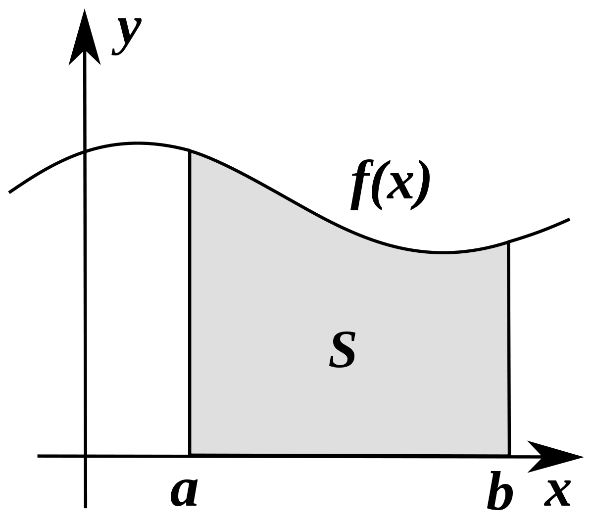
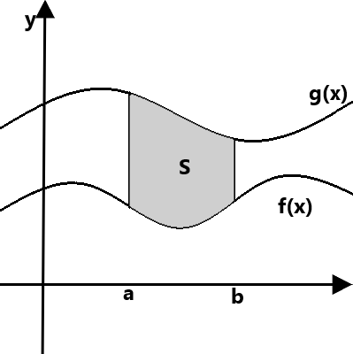

Mis asi on integraal?
Integraal määrab arvulised väärtused funktsioonidele mis võivad kirjeldada nihet, pindala, ruumala, võttes kokku
andmed, mida lihtsa vaatlemise abil on raske leida, sest nad võivad olla lõpmatult väikesed. Integreerimine on tuletise
leidmise pöördfunktsioon, seega kui juba ühte oskad, siis on teine märksa lihtsam. Siin aga keskendume puhtalt integreerimisele.
Integreerimine ja diferentseerimine on inglise keeles Calculus, selle ja selle vaevade kohta on netis palju meeme.
Pilt olukorrast, kus saaks pindala S leida integreerimise abil:

https://commons.wikimedia.org/wiki/File:Integral_as_region_under_curve.svg
Funktsiooni f(x) pindala S on siin piiratud x-telje, y=a, y=b telgede ja funktsiooni joone endaga.
{kind=link}
Algfunktsioon
Olgu f(x) suvaline funktsioon. Kui leidub funktsioon F(x) nii, et tuletis F'(x) = f(x), siis F(x) ongi funktsiooni f(x) algfunktsioon. Selle algfunktsiooni leidmisel tuleb aga meeles pidada, et tuletise leidmisel kaovad funktsioonist kõik konstandid mis ei ole selle muutuja kordsed, mille suhtes on diferentseeritud.
Ehksiis tuletis funktsioonist f(x)=5x on f'(x)=5, kuid funktsioonist f(x)=5 on f'(x)=0. Paraku aga ei jää sellest mingit märki maha. Seega, igasuguse algfunktsiooni leidmisel on tema üldkujul vajalik, et sinna otsa oleks liidetud suvaline reaalarvuline konstant C.
Näiteks, kui f(x) = 2, siis F(x) = 2x + C. Kui sa ise mitteformaalselt mingit pindala otsid, ja selle konstandi unustad, siis maailm kohe selle pärast ei lõppe. Kui aga näiteks Tartu Ülikoolis kontrolltöös unustad, siis võid leppida korraliku punktide kaotusega.
Algfunktsioonide leidmiseks on vajalik kasutada tabelit, kus on funktsioonid ja nende algfunktsioonid, või tuletiste tabelist tuletada. Internetis on palju erinevaid lehti, kus on neid tabeleid erinevad pikkusega. Kõige põhilisemad võtted tasuks pähe õppida.
Näiteks leht integral-table.com. Tore leht, sest nimi jääb hästi meelde.
Määratud ja määramata integraal
Kui pead leidma integraali, mille rajad pole määratud (s.t. leiadki lihtsalt üldkuju), siis see on Määramata Integraal. Sellest veidi erinev ja praktilisem on aga Määratud Integraal, kus on rajad määratud, tavaliselt reaalarvudest a-st kuni b-ni. Kui see funktsioon on pidev lõigus [a, b], siis on selle välja arvutamine väga lihtne*, kasutades Newton'i-Leibniz'i valemit**, kus kui on antud eelnevate tingimustega integraal, siis selle pindala avaldub kujul F(b) - F(a).
Juhul kui on vaja leida kahe funktsiooni kaare vahelist pindala, siis tuleb leida nende kahe funktsiooni määratud integraalide vahe, kus nende rajad on samad. Lahutada tuleb ülemisest alumine, vastasel juhul saate negatiivse pindala ja sellel on tunduvalt vähem rakendusi.
Kahe funktsiooni kaarte vaheline pindala, mis on leitav tehtega: G(b) - G(a) - (F(b) - F(a))
* - juhul kui integraalialune funktsioon ei ole kümne erineva funktsiooni korrutis, siis parem otsi netist integraali kalkulaator
** - inglise keeles ka Fundamental Theorem of Calculus, ilmselt tähendab, et see on tähtis värk